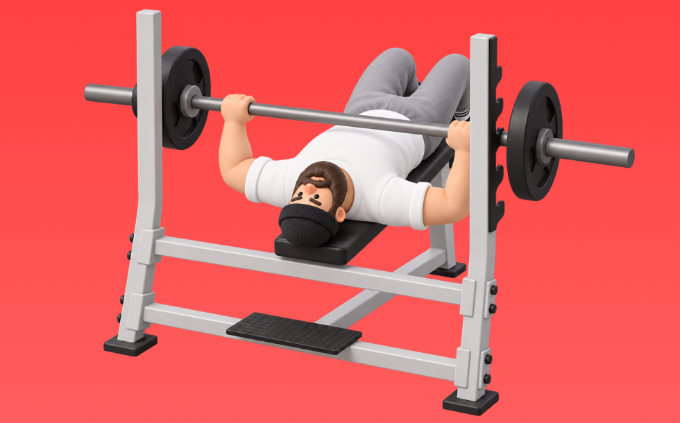

Decline Bench Press

Use a barbell to press. Lower to the chest and press up. Targets lower pecs and triceps; lets you use heavier loads. Build chest size and pressing strength.
- Primary Muscle Group
- Chest
- Detailed Muscles
- Pectorals / Front delts / Triceps
- Equipment
- Barbell
- Also Known As
- デクラインベンチ / decline bench
YouTube Videos
-
Instructional Fitness - Decline Bench Press
-
BUILD THE LOWER CHEST: Correct method using the DECLINE BENCH PRESS
-
How to PROPERLY Decline Bench Press (DO THIS)
-
How To: Barbell Decline Bench Press
-
HOW TO: Decline Bench Press | Perfect Your Technique
-
Flat vs Incline vs Decline Bench Press: Choosing for Your Goals
-
Decline Dumbbell Bench Press - Chest Exercise
-
How to PROPERLY Bench Press for Growth (5 Easy Steps)
-
The ONLY 3 Lower Chest Exercises You Need for Rounded Pecs
-
Get a Chiseled Lower Chest (No Bullsh*t Guide)
YouTube Shorts
-
❌ Decline Bench Press Mistake (AVOID THIS!)
-
decline bench press guide #chest #gym #guide #gymmotivation #gymlover
-
Decline Dumbbell Bench Press - Chest Exercise - Bodybuilding.com
-
Decline bench press mistakes! Right✅ vs Wrong❌ | GAZI FITNESS #gym #shorts
-
Decline Press: The Ultimate Chest Workout You Need
-
Decline bench press Mistake ❌ #shorts #gym #fitness #bodybuilding
-
How to perform a Decline Bench Press in the Smith Machine for Bigger Lower Chest Gains
-
How Decline Should a Decline Press Be?
-
How To Bench Press With Perfect Technique (5 Steps)
-
How to Properly do Decline Ab Crunches
-
How to do a Flat Dumbbell Chest Press!
-
"Common Decline Bench Press Mistakes to Avoid!"
-
How to do a Dumbbell Incline Chest Press!
-
Decline Bench Press #chestday #pushday #bodybuilding #chestexercises
-
FIX Your Dumbbell Bench Press (DO THIS INSTEAD!)
-
Decline Bench Press (✅ OR ❌) #gym #fitnesstrainer #shorts
-
Decline Dumbbell Press Mistake ❌#shorts #gym #bodybuilding #fitness
-
Bench Press Grip Widths & Muscles Worked
-
"The Decline Bench Press Is The Best Chest Builder" 🤔
-
Best Bench Press Tutorial Ever Made
-
The PERFECT Bench Press (5 Steps)
-
Key tips for a strong and safe dumbbell incline press
-
Dumbell Chest Press Mistakes (DON'T DO THIS!)
-
9 Powerfull Dumbbell Chest Workout to Transform Upper Body| #workout #chestworkout
-
The Most Overlooked Part of Dumbbell Bench Press
-
Decline Press Form: WRONG vs RIGHT ✅ #Shorts
-
Chest Day: Maximize Gains with the Best Chest Exercises!
-
✅ The PERFECT Incline Smith Machine Bench Press
-
How to PROPERLY Use The Incline Chest Press Machine At Planet Fitness (Exercise Tutorial)
-
Bench Press Variations (KNOW THE DIFFERENCE!)
-
THE WORST EXERCISE | BENCH PRESS
-
Sam Sulek's Dumbbell Bench Press Workout Form Tip 💯 #samsulek #samsulekshorts
-
Smith Decline Bench Press - a great Chest exercise, Save and try your next workout
-
✅ The PERFECT Dumbbell Chest Press
-
Incline Bench Press Mistake (STOP DOING THIS!)
-
Incline Chest Press Mistake (STOP DOING THIS!)
-
Incline DB Bench 🔥 BEST Guide Ever Made
-
Easiest Way to Set Up Incline Smith Machine Bench Press (in Less than 1 Minute)
-
How to Bench Press: 5 Simple Steps
-
Dumbbell Bench Press Mistake (KILLING GAINS!)
How to Perform
- Set a stable position and brace your torso.
- Press with control without using momentum.
- Lower under control while keeping range of motion.
Form Tips
- Do not shrug your shoulders
- Keep wrists neutral
- Avoid excessive momentum
Pro Tips
- Prioritize form and range of motion before adding load.
- If shoulders feel uncomfortable, reduce load and range.
Rep Guide
General guidelines. Adjust based on your goal, experience, and condition.
- Strength: 1-5 reps
- Hypertrophy: 6-12 reps
- Endurance: 13-20 reps
Get the app
Log your trainingand workoutsin Biggr.Start for freeright now.